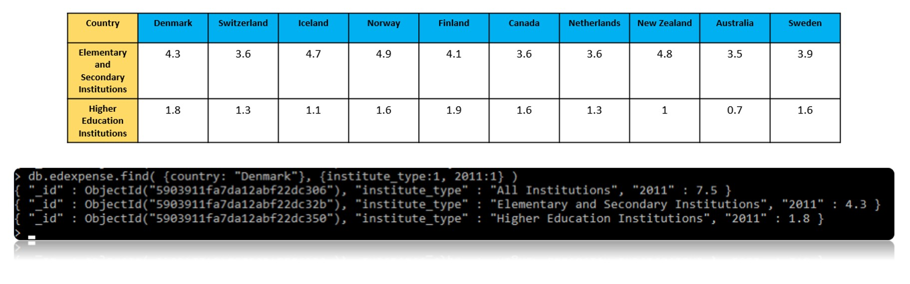

I590 SQL NoSQL
Indiana University
This website was created to present my work related to my Final Project for I590 SQL NoSQL class taught by Professor Ying Ding at Indiana University. The presentation of this work is strictly for academic purposes
Introduction
The correlations between the happiness of a country and variety of factors have been accounted for in a dataset known as the
World Happiness Report. This report does not contain any data relating to how education may impact happiness of country. For this
final project I queried three different datasets: The 2016 World Happiness Report, the Times Higher Education World University
Rankings 2011 -2016, and a National Center for Education Statistics dataset on expenditures on education as a percent of GDP by country.
I chose Mongodb, a NoSQL database, to store and query these collections of data and I also created XML databases
to help present the data. You can click on the links below to view the XML pages and review the collections of data.
One of the queries I performed on the world happiness collection, titled “happiness”, was to find the countries with the top ten
happiness ranks. I used the command db.happiness.find({}).limit(10).pretty( ). Then I queried the world university ranking collection,
titled “highered”, to find the number of universities and their ranks. For example, Denmark was ranked 1st in happiness in 2016, so I
wanted to find out how many top ranked universities they had in 2016. I used db.highered.find( {country: "Denmark", year: 2016}, {world_rank:1} )
to find the universities ranks and db.highered.find( {country: "Denmark", year: 2016} ).count() to find the total.

The results of my queries showed that there was no obvious correlation between number of top universities and happiness rank. Iceland
had only 1 top ranked university but had a higher happiness rank than Australia which had 31 top universities. Once I finished this
set of queries I moved on to query the educational expenditure data, collection title “edexpense.” I queried this collection to find
the educational expenditures for countries in the top ten happiness ranks. For example I used the command db.edexpense.find( {country: “Denmark”} , {institute_type:1 , 2011:1} )
to find the expenditures for elementary, secondary, and higher education in the year 2011. In the edexpense collection each expenditure
is represented as a percent of GDP. The results of the query showed that the countries in the top 10 happiness ranks spend between 3.5% - 4.9% on
elementary and secondary education and between 0.7% - 1.8% on higher education.
I queried the US to compare the numbers and that the US ranked 13th in happiness, spent 3.4% on elementary and secondary education and 0.9% on
higher education, had 146 of the top universities, and 14 of those were in the top 20 universities in the world.